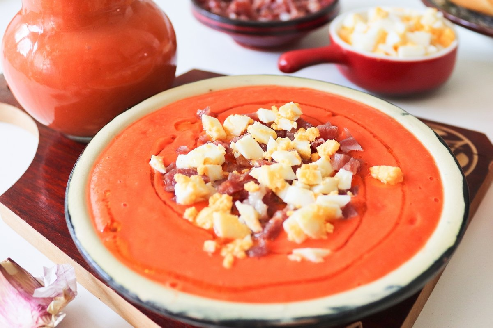

Salmorejo

Description.
El salmorejo es una deliciosa crema espesa que se toma fría, que puede prepararse majando los ingredientes con paciencia en un mortero, o ayudados de una batidora o un robot de cocina, muy parecida a la porra antequerana y primo hermano del gazpacho, aunque éste debe ser más ligero y cambian algunos ingredientes.
Ingredients:
- Tomate 1 kg
- Pan de hogaza 200 g
- Aceite de oliva virgen extra 150 ml
- Dientes de ajo 1
- Sal al gusto
Steps:
- Lavar y triturar los tomates.
- Cubrir el pan en un bol con el puré de tomate durante 10 minutos.
- Incorporar el diente de ajo y triturar con la batidora.
- Incorporar el aceite.
- Volver a triturar hasta conseguir una textura uniforme.